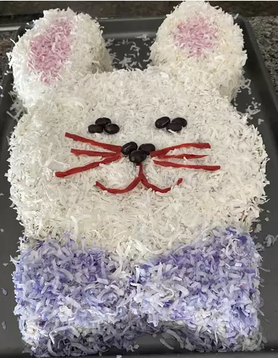

Easy Bunny Cake

How to Make a Bunny Cake
This bunny cake is so simple to make for Easter,
using two coconut cakes shaped to look like a bunny head!
Ingredients
Cake:
- 1 (15.25 ounce) package yellow cake mix
- 1 cup water
- ⅓ cup vegetable oil
- 3 large eggs
Frosting and Decoration:
- 1 (16 ounce) container vanilla frosting
- 3 ¾ cups flaked coconut
- 30 small jellybeans
- 4 sticks red licorice
Steps
- Preheat the oven to 350 degrees F (175 degrees C). Grease the sides and bottoms of two 9-inch metal springform pans.
- Beat cake mix, water, vegetable oil, and eggs in a large bowl with an electric mixer on low speed until moistened, about 30 seconds. Increase to medium speed and beat for 2 minutes. Pour into the prepared pans.
- Bake in the preheated oven until a toothpick inserted in the centers comes out clean, 23 to 28 minutes.
- Cool in the pan for 15 minutes, then remove cakes from the springform pans and cool completely, about 20 more minutes.

- Place one cake on a serving tray, forming the bunny's head.
- Cut 2 convex-shaped ears from each side of the second cake, and place them on each side of the head to form ears. Place the remaining concave-shaped piece about 1/2 inch below the head for the bowtie.
- Frost the entire bunny cake with vanilla frosting; pat the cup coconut evenly over top and sides. Decorate the bunny face and bowtie with jellybeans and use licorice to make whiskers.